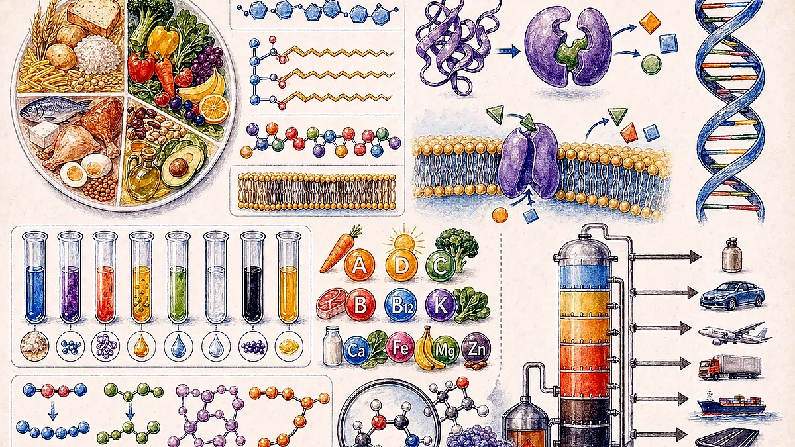
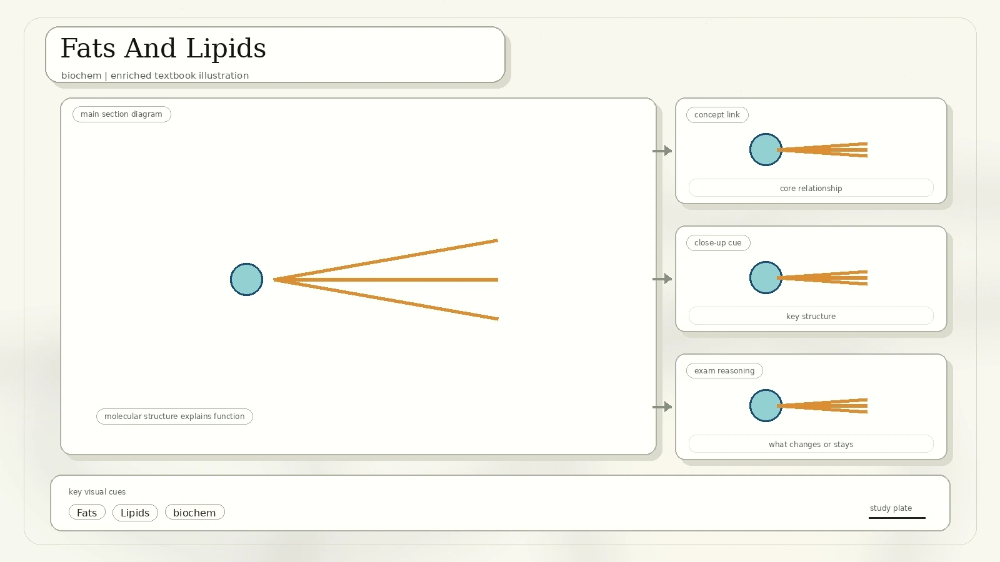
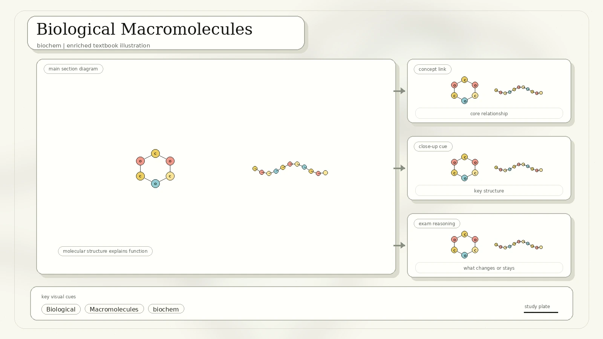
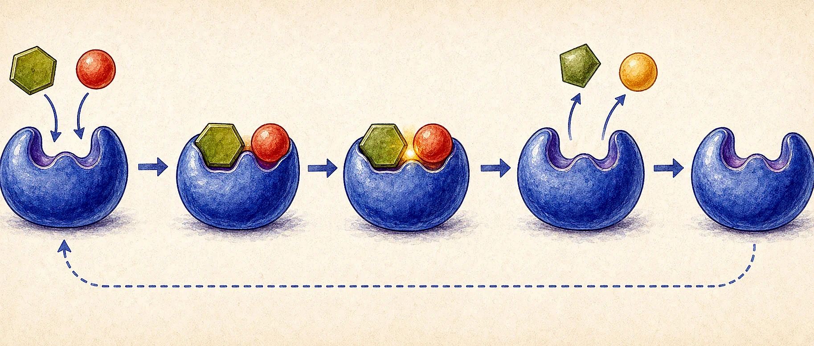
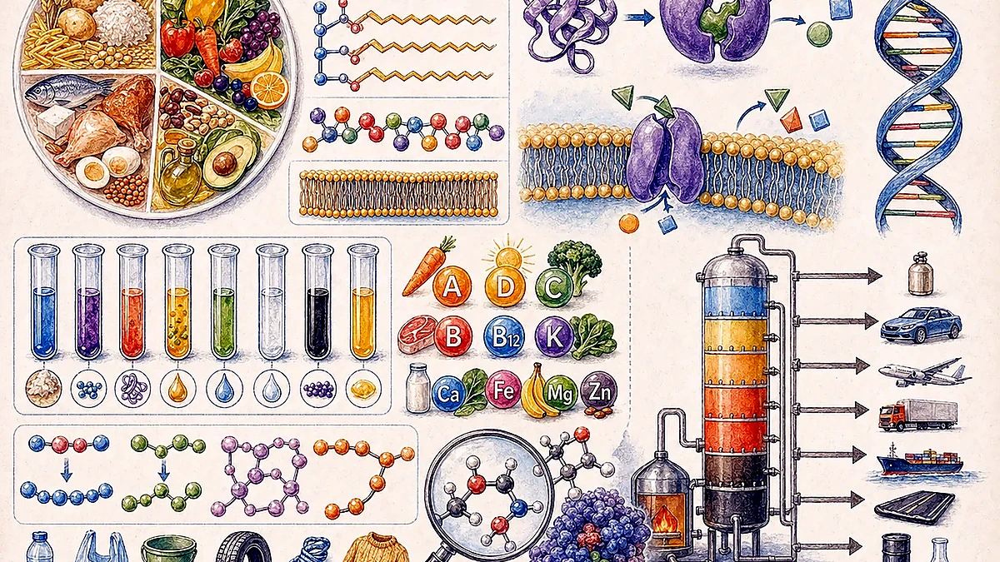
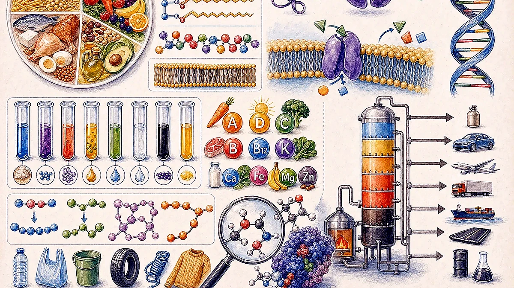
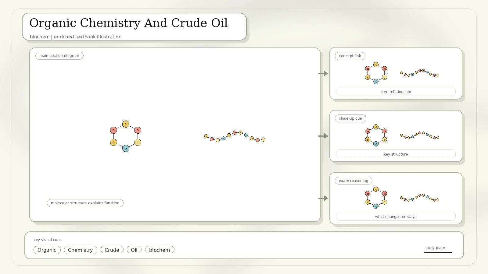
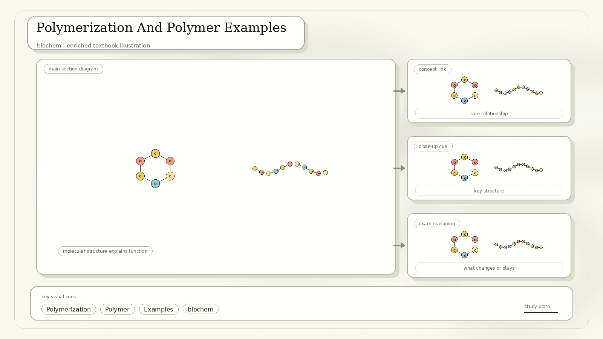

Human Nutrition And Water
Water is an essential component of the body. The scan lists it as a solvent, a key component of tissues, a regulator of body temperature, and a transporter of substances.

Water is lost through urine, sweat, faeces, and breathing out water vapour.
Found in fruits, vegetables, pasta, rice, grains, peas, beans, and other plant foods.
Found in fish, meat, poultry, dairy products, eggs, and beans.
Fats occur in oils, nuts, butter, and meat. Minerals include sodium, calcium, and iron; vitamins include A, D, E, and K.
Carbohydrates
Carbohydrates include monosaccharides, disaccharides, and polysaccharides. Glucose is a key fuel for body functions.

Single sugar units such as glucose and fructose.
Two sugar units, such as sucrose and maltose.
Long carbohydrate chains including starch, cellulose, and glycogen.
Food Tests
The scan includes Benedict's test for reducing sugar and Biuret test for protein. These tests make invisible nutrients visible through colour change.

| Test | Procedure | Positive Result |
|---|---|---|
| Benedict's test | Place about 1 ml sample in a clean test tube, add about 2 ml Benedict's reagent, heat in a boiling water bath for 3 to 5 minutes. | Colour changes from blue toward green, yellow, orange, red, or brick-red as reducing sugar concentration increases. |
| Biuret test | Add alkaline solution and copper(II) reagent to a protein sample. | Blue solution turns purple because copper ions form a complex with peptide bonds. |
Medical link from the scan: Biuret testing can detect protein in urine. Excess protein may indicate kidney disease and can also be linked with conditions such as diabetes mellitus and high blood pressure.
Fats And Lipids
Fats are important energy stores, insulators that reduce heat loss, and sources of fat-soluble vitamins. They are also important parts of cell membranes.

A fat molecule is commonly built from glycerol and fatty acid chains.
Lipase, including pancreatic lipase, helps digest lipids.
The scan shows oil dispersing in water and floating because it is less dense and hydrophobic.
Heating fat with a strong base can produce soap and glycerol.
Biological Macromolecules
Large biological molecules are made from smaller units. The scan compares polysaccharides such as starch, cellulose, and glycogen, then points to proteins, DNA, and RNA as other macromolecules.

| Macromolecule | Basic Unit | Important Feature |
|---|---|---|
| Amylose | Alpha-glucose | Plant starch component; mostly unbranched. |
| Amylopectin | Alpha-glucose | Plant starch component; branched. |
| Glycogen | Alpha-glucose | Animal storage carbohydrate; highly branched. |
| Cellulose | Beta-glucose | Plant structural carbohydrate; forms strong fibres. |
Amino Acids, Proteins, And Enzymes
Proteins are composed of long chains of repeating monomers called amino acids. Amino acids share a basic structure: amine group, carboxyl group, hydrogen atom, and variable side chain attached to a central carbon.
- Amino acids link by condensation reactions to form peptide bonds.
- There are 20 common amino acid types used by organisms.
- Proteins contain carbon, hydrogen, oxygen, nitrogen, and sometimes sulfur.
- Long amino-acid chains fold into three-dimensional shapes.
- Protein examples in the scan include collagen, trypsin, insulin, myosin, and GLUT transport proteins.

Enzymes: a type of protein that functions as a catalyst. Enzymes alter the rate of chemical reactions and remain unchanged at the end of the reaction.
DNA: The Hereditary Material
DNA is composed of a chain of nucleotides. There are four nucleotide types, and genetic information exists in their sequence. DNA usually consists of a double strand of nucleotides called a double helix.

Food And Energy
The scan gives the common nutritional energy values per gram.

| Substance | Energy Provided |
|---|---|
| Carbohydrate | 4 Calories per gram |
| Protein | 4 Calories per gram |
| Fat | 9 Calories per gram |
| Alcohol | 7 Calories per gram |
Vitamins, Minerals, And Deficiency Disease
A person may get enough food but still lack a particular nutrient. If deficiency continues for a long period, diseases or disorders can occur.

| Nutrient | Deficiency Disease Or Disorder | Symptoms From The Scan |
|---|---|---|
| Vitamin A | Night blindness or loss of vision | Poor vision, loss of vision in darkness, and sometimes complete vision loss. |
| Vitamin B1 | Beriberi | Weak muscles and very little energy to work. |
| Vitamin B2 | Ariboflavinosis | Mouth, skin, or eye problems can appear when deficiency is prolonged. |
| Vitamin B3 | Pellagra | Classically linked with dermatitis, diarrhoea, and nervous-system problems. |
| Vitamin B5 | Paresthesia | Abnormal tingling or "pins and needles" sensations. |
| Vitamin B6 | Anaemia | The scan lists anaemia; B6 deficiency can also affect nerves and skin. |
| Vitamin B7 | Dermatitis and enteritis | Skin inflammation and intestinal inflammation. |
| Vitamin B9 and Vitamin B12 | Megaloblastic anaemia | Large, immature red blood cells form when DNA synthesis is disrupted. |
| Vitamin C | Scurvy | Bleeding gums and wounds taking longer to heal. |
| Vitamin D | Rickets and osteomalacia | Bones become soft and bent. |
| Vitamin E | Less fertility | The scan lists reduced fertility as the related deficiency problem. |
| Vitamin K | Non-clotting of blood | Blood clotting is impaired because vitamin K is needed for clotting factors. |
| Calcium | Bone and tooth decay | Weak bones and tooth decay. |
| Iodine | Goiter | Swollen neck glands and possible mental disability in children. |
| Iron | Anaemia | Weakness. |
Ascorbic acid supports collagen formation, iron absorption, immune function, wound healing, and maintenance of cartilage, bones, and teeth.
Vitamin C helps protect against damage by free radicals and pollutants such as cigarette smoke.
Iodine is brownish-red. Vitamin C can make it colourless, so the reaction can be used to estimate vitamin C in a sample.
Organic Chemistry And Crude Oil
Organic compounds, with a few exceptions, contain carbon. Most organic compounds also contain hydrogen. Crude oil, petroleum, and natural gas are fossil fuels commonly used as energy sources.

| Crude Oil Fraction | Approximate Boiling Range From Scan | Common Use |
|---|---|---|
| Petroleum gas | Below 25 degrees C | Bottled gas and fuel. |
| Gasoline | 25 to 60 degrees C | Car fuel. |
| Naphtha | 60 to 180 degrees C | Chemical feedstock. |
| Paraffin | 180 to 220 degrees C | Aircraft fuel and heating fuel. |
| Diesel | 220 to 250 degrees C | Vehicle fuel. |
| Fuel oil | 250 to 300 degrees C | Ship and industrial fuel. |
| Lubricating oil and bitumen | High boiling residue | Lubricants and road surfaces. |
Polymerization And Polymer Examples
Monomers are small molecules that join to form polymers. The scan shows addition polymerization and condensation polymerization, then lists both natural and synthetic polymer examples.

Unsaturated monomers add together without losing small molecules. Examples include polyethylene, polyvinyl chloride, polystyrene, and polypropylene.
Monomers join while releasing a small molecule, commonly water. Many biological polymers form by condensation reactions.
What To Remember
Carbohydrates, fats, and proteins are organic molecules with different structures and functions.
Benedict's detects reducing sugars; Biuret detects peptide bonds in proteins.
Know common vitamin and mineral deficiencies, especially A, B1, C, D, calcium, iodine, and iron.
Repeating monomers create natural polymers like DNA and wool, plus synthetic materials like plastics.